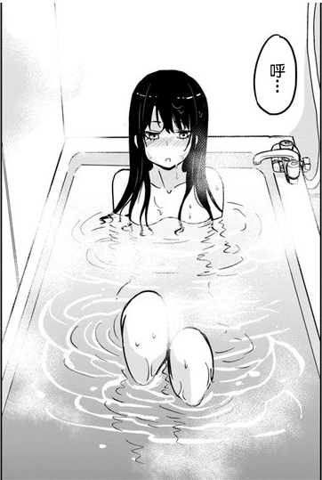
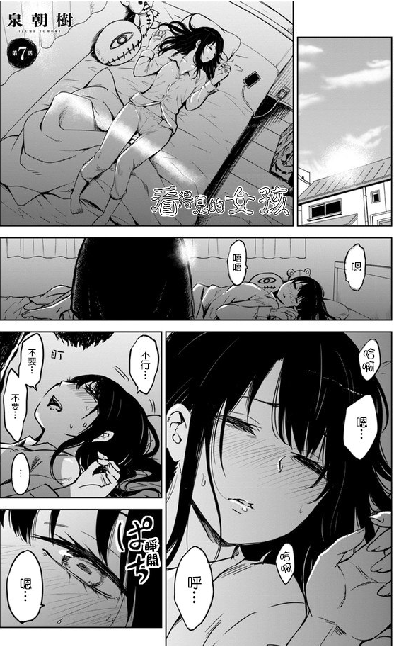

第七章 在四叶家里洗澡的见子
黄昏，是黑夜与白昼交替的时刻，也是阴阳两界交错的时刻……
昏黄色的光将坡道上的人影子拉的老长，一个少女提着刚刚从便利店买的零食和食材仰着头看着天空，像是注视着天色的云彩。
[你看到我的小熊了吗？]
这是寻常人听不到的低语，是灵的声音。
“没有。”
四叶毫不犹豫的回复向自己搭话的灵。
他打量着向自己搭话的灵，两米二的魁梧身高，破破烂烂的身体，手上还拖着一米大的熊玩偶……
喂，这不是在你自己手上吗？
找茬吗？
这样想着的四叶得到了答案，拖着小熊的灵破破烂烂的脸突然变得狰狞，然后咆哮着扑向了四叶。
“你找错人了！”
四叶一巴掌啪的一声呼了过去，直把那个灵的脑袋360度转了好几圈，在头好不容易停下的时候，那个灵露出了一脸茫然的表情空洞的看着四叶，似乎不明白为什么会有人那么的彪悍。
[你看到我的小熊了吗？]灵呆呆的继续询问道。
然后，他的眼睛猛地张大，一个逐渐放大的手掌定格在他的眼前。
“找茬是吧？”
呼的一声，是四叶又反手用手背甩了一巴掌。
“碰瓷是吧？”
也许打的顺手了，在那个灵的脑袋没有完全停下的时候，四叶再度顺势补了一巴掌让它的脑袋像个陀螺一样转个不停。
“吓人是吧？”
“找小熊是吧？”
“搭讪是吧？”
“看你还敢不敢出来！”
……
五分钟后，四叶神清气爽的把提熊大汉的灵丢在一边，提着塑料袋离开了。
在这个世界上游荡的灵数不胜数，也不是所有的灵都是有害的，大部分灵虽然会骚扰看得见它们的人，但其实只不过是因为寂寞久了，所以想要找人玩而已，刚刚的那个大致上就是这样的灵，故意出来吓唬人。
因为只是吓唬人，也没什么危害，所以四叶并没有消灭那家伙，但被四叶这么抽了一顿后，估计他再也不敢出来吓唬人了吧
“我回来了。”
四叶打开门进入玄关的时候高声的打了声招呼。
其实四叶本人并没有这样的习惯，毕竟平时家里也没什么人，但是今天稍微有些不一样，家里有客人。
“啊，你回来了！”裹着浴巾正擦着头发的见子从屋子里走出来向四叶打了声招呼，“四叶，你的吹风机在哪里？我找不到吹风机在哪。”
靠！
四叶不由的捂着脸，他会打招呼的本意就是为了让见子稍微注意下形象。
虽然最近穿着JK服，但是他本质是个男生，他也不是什么迟钝的后宫男主，绝对不会让自己出现什么误入浴室撞见女生果体的事情出现，但是，装作女生的自己，果然还是不可避免的让人放松了警惕。
幸好，见子到底是裹着浴巾跑出来的。
就算是面对女生，除了温泉浴室等特别的地方，光着身子被女生看到也是会不好意思的。。
但，美人出浴，果然是有些养眼呢。
“等一下，我去给你拿，你先换好衣服吧。”
四叶一边说道，一边脱下鞋子，然后哒哒哒的跑进屋子上了楼梯。
虽然有着一头长发，但是，四叶从来没有使用吹风机吹干头发的需求，因为这种事情，使用术法就可以了，在学院里认识的人，比如那个妖孽学长，用的就是火之术式，而四叶自己一般是拜托下大气的精灵。
进入自己的卧室，四叶从抽屉里拿出一支粉笔，在桌子上画了一个圆，然后在上面补上鬼画符一样的文字，右手成剑指按在圆圈的中央，闭着眼睛注入力量，眨眼睛，一个吹风机就出现在了四叶的桌子上。
“四叶，你的家里好干净啊。”
门打开，已经换好了衣服的见子走了进来由衷的发出感慨道。
各种意义上的干净，既没有多余的灰尘，也没有看到什么不该看见的东西。
就像是错觉一样，在这个房子带着，总有种很清爽的感觉。
当然，因为是大气的精灵帮我打扫的房子。
四叶在心里默默的做出回应，然后把手上的吹风机递了过去。
“谢谢。”
见子笑着向四叶道谢，接过了吹风机，扫视了一眼房间，找到插座的位置后便径直走了过去。将插头插到了四叶床头的插座上后，见子一屁股坐了下来打开吹风机的开关。
烘烘烘烘烘烘——
“四叶一个人住在这里，每天打扫房子用了不少时间吧？”
“还好吧，平时也没有什么事。”
实际上，这房子的打扫完全不需要四叶操心，大气的精灵是经常在帮四叶打扫房间。
四叶随意的回答道，眼睛从见子的身上移开看向了窗外。
这孩子，就这么套着衬衫，不穿裙子，衬衫的扣子没有扣好啊……
“我去楼下做饭了，等下你在我这里吃吧，我要做中华料理哦。”
总觉得自己不太适合继续呆在这个房间的四叶看着迟暮的天色找了个借口打算出去。
“诶？中华料理？好想吃啊……可是……”
见子看上去有些犹豫，一方面是诱人的中华料理，另一方面，则是家里这时候也差不多已经在做晚饭了吧。
“我刚刚已经和你妈妈打过招呼了。”
四叶见见子纠结的样子不由的感到有些好像，安抚了对方后便下了楼。
扮做女生果然很容易拉进关系，要是是男生的话，见子也不会那么放心的过来借浴室吧？
傍晚的时候见子突然跑过来要借浴室，四叶也稍微惊讶了一下，稍微想了想便明白了原因。
虽然前段时候去见子家帮见子打扫了一些脏东西，但是，灰尘扫过之后，不经常扫的话，依旧会积灰，大概，又有新的灵住进去了吧。
稍微有些头疼。
虽然猜到了原因，但是四叶也没办法一劳永逸的解决问题。
他自己在的房子现在没有灵，是因为有大气的精灵住在这里，大气的精灵不喜欢和普通人住一起，四叶也没办法强人所难。虽然也有其他驱灵的方案，但都有各种麻烦的问题。
如果布置法阵，布置的材料太差，指不定被路过的三脚猫偷了，布置的太好，没有经费啊……小小的神明大人可没有留下那么多遗产给四叶挥霍，四叶也没有打算做亏本生意。
而且，法阵这东西，一旦布置下来，就像是广告一样，广而告之，告诉这个城市所有的灵异，这里有什么东西，如果是神社也就算了，但对于普通人家而言，这反而是件麻烦的东西。
【我突然出现更新番外，你们一定很意外，见子超可爱】
【明天我约了三个汉服娘出游，羡慕吗】